13 Extremes
13.1 Introduction
Starting with daily, or sub-daily data the analysis proceeds in two stages. The first is to get the extremes and the second is to analyse them. The data from two stations in Ghana are used for illustration. Use File > Open from Library > Instat > Browse > Climatic > Ghana and open the RDS file called Ghana two stations. From Fig 11.1a we see the data start in 1944, though the elements, other than rainfall start later.
| Fig. 11.1a Two stations from Ghana | Fig. 11.1b |
|---|---|
| 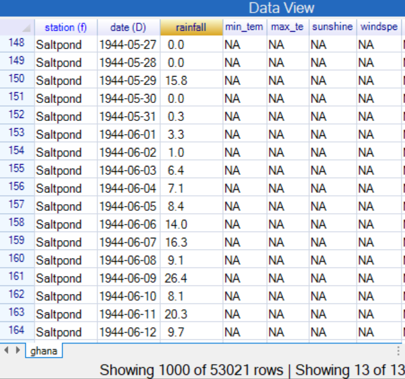 | 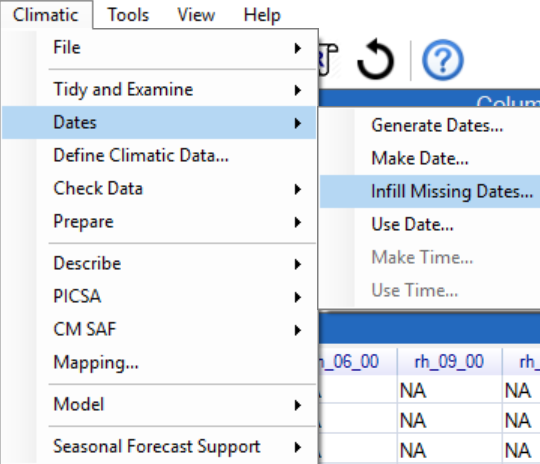 |
In the Climatic menu the data are already in the right “shape” and there is a date column, see Fig. 11.1a. So start by checking whether there are any missing dates to infill, Fig. 11.1b.
| Fig. 11.1c Fig. 11.1d | |
|---|---|
| 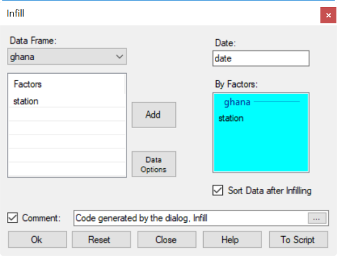 | 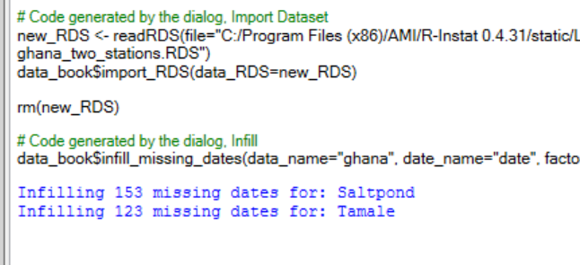 |
In Climatic > Dates Infill Missing Dates, include the Station, Fig. 11.1c. The results, in Fig. 11.1d, indicate that there were 5 missing months in the record at Saltpond and four at Tamale. There are now 53297 rows of data.
Now use Climatic > Dates > Use Date, Fig. 11.1e, and complete as shown.
Then use Climatic > Define Climatic data. It should complete automatically. Check for uniqueness and then press OK.
| Fig. 11.1e | Fig. 11.1f |
|---|---|
| 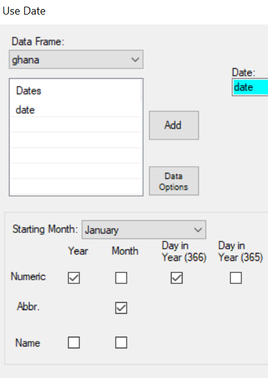 | 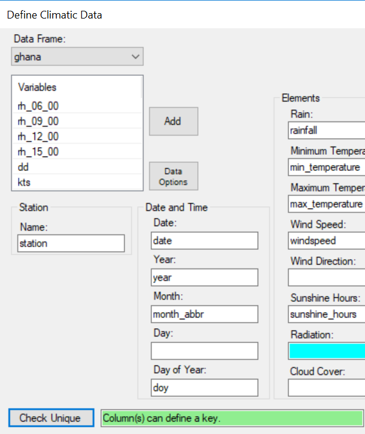 |
Now use Climatic > Check Data > Inventory, Fig. 11.1g. Include the elements down to wind speed.
| Fig. 11.1g | Fig. 11.1h |
|---|---|
| 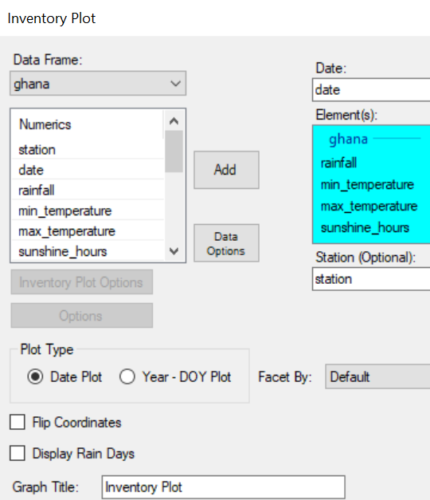 | 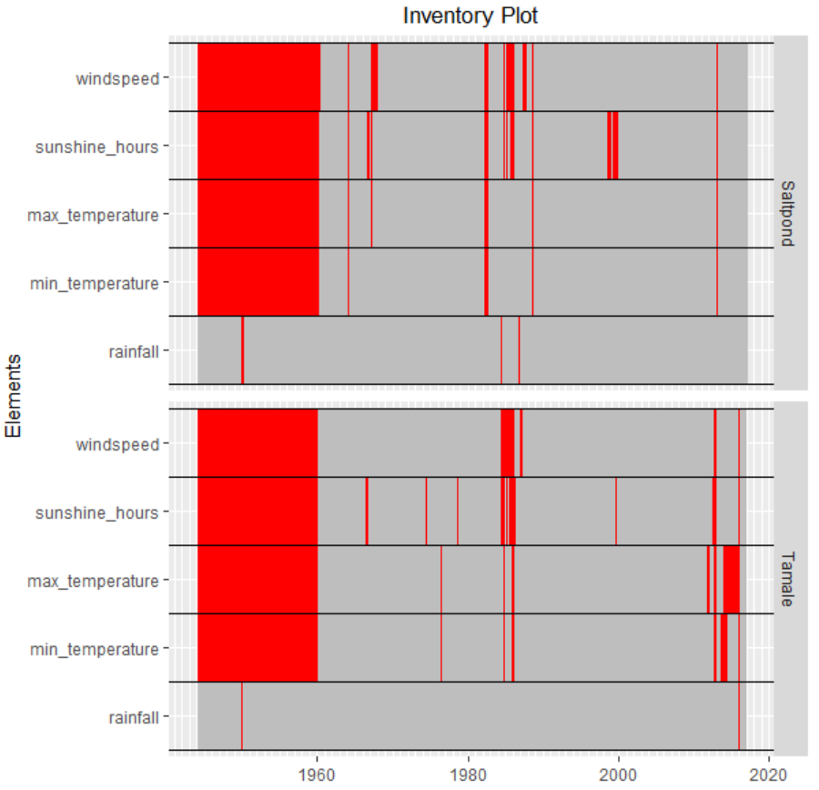 |
The results show the other elements started roughly in 1960. There are relatively few missing values in the rainfall, and the other elements are also reasonably complete.
The same Climatic > Check Data menu has options for quality control checks. These are assumed, as we proceed to examine the extremes.
13.2 Getting the extremes
In the Climatic > Prepare menu there are four dialogues that get extremes. They are considered briefly and then Climatic > Prepare > Extremes is examined in detail.
The Climatic > Prepare > Climatic Summaries, Fig. 11.2b has already been used extensively in this guide.
| The ClimzaFig. 11.2a | Fig. 11.2b |
|---|---|
| 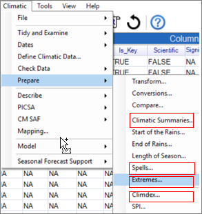 | 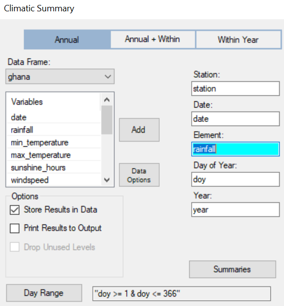 |
In Fig. 11.2c we can choose the extremes, i.e. the minimum and/or maximum. These can be annual, as shown in Fig. 11.2b, or for a part of the year, or perhaps monthly.
| Fig. 11.2c | Fig. 11.2d |
|---|---|
| 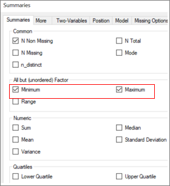 | 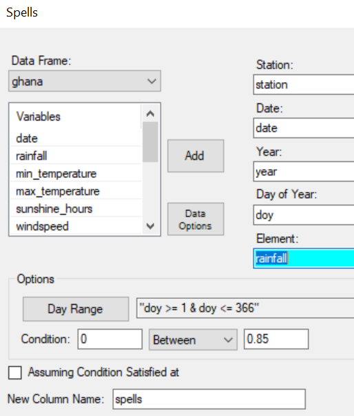 |
Fig. 11.2d shows the Climatic > Prepare > Spells dialogue. This automatically gives the extreme, i.e. longest spell each year. This may be the longest dry spell for rainfall, or the longest hot (or cold) spell for temperatures, etc.
The Climdex system is covered in Sections 11.3 and 11.4. Hence now consider the Climatic > Prepare > Extremes dialogue, Fig. 11.2e.
| Fig. 11.2e | Fig. 11.2f |
|---|---|
| 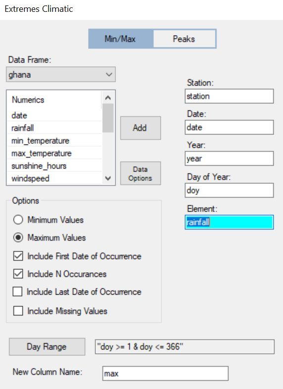 |
To be continued
13.3 Climdex Indices - precipitation
A set of 27 climate change indices have resulted from WMO meetings and reports. They are described in http://etccdi.pacificclimate.org/list_27_indices.shtml and implemented through an R package called climdex.pcic. The pcic stands for Pacific Islands Impacts Consortium, but the indices are general.
Each index can produce an annual summary, and some offer the option of monthly summaries. The are a single dialogue in R-Instat. Sixteen of the indices are temperature-based. The other 11 are rainfall indices.
The Dodoma data from Tanzania are used for illustration. Use File > Open from Library > Instat > Browse > Climatic > Tanzania and open the file called Dodoma.rds. It is already defined as a climatic dataset. Hence the climatic dialogues can be used immediately.
The annual summaries from climdex are compared with those used in Chapters 6 and 7. Hence start with the Climatic > Prepare > Climatic Summaries, Fig. 11.3b.
| Fig. 11.3a | Fig. 11.3b |
|---|---|
| 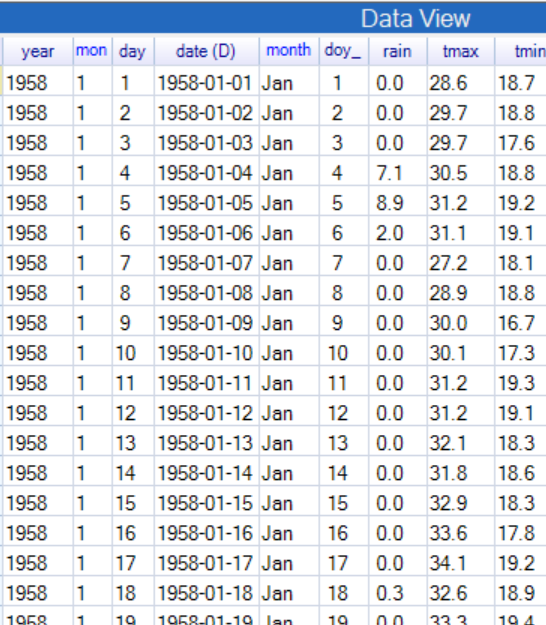 | 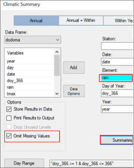 |
Press Summaries on the main dialogue and choose the summaries indicated in Fig. 11.3c. Then choose the Missing Options tab to give Fig. 11.3d. The default in climdex is to set the summary to missing if more than 15 days in the year are missing, so the same is done here.
| Fig. 11.3c | Fig. 11.3d |
|---|---|
| 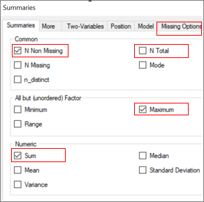 | 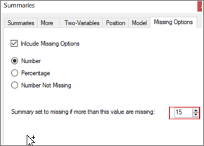 |
The result is two annual summaries, Fig. 11.3e, that are like two of the climdex indices. They are ready to draw graphs, fir trend lines and so on. The data frame, in Fig. 11.3e, has 79 rows, because there are 79 years of data
Use Climatic > Prepare > Climdex, Fig. 11.3f. The dialogue should fill automatically. If not, then check you are using the correct data frame.
| Fig. 11.3e | Fig. 11.3f |
|---|---|
| 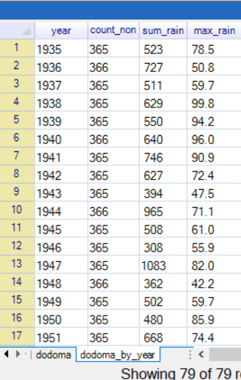 | 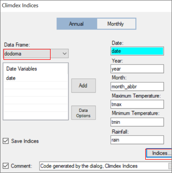 |
In Fig. 11.3f click on Indices. Complete the settings as shown in Fig. 11.3g and then choose the precipitation tab. The numbers for each index match those given in http://etccdi.pacificclimate.org/list_27_indices.shtml . For illustration, tick everything there and press Return.
| Fig. 11.3g | Fig. 11.3h |
|---|---|
| 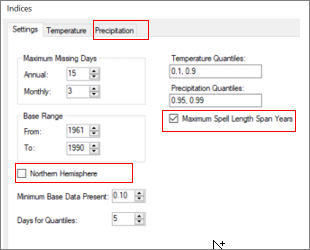 | 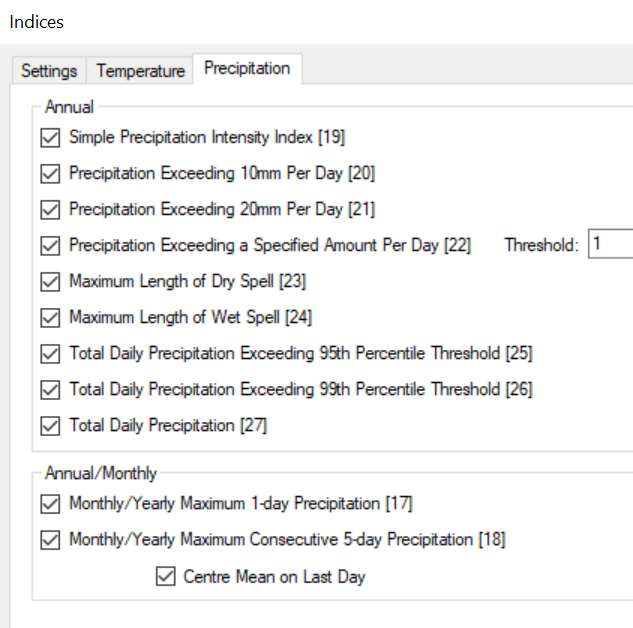 |
This results in 11 further columns, for each of the precipitation indices. They are added to the yearly data frame and shown in Fig. 11.3i. Each is described briefly, before continuing with the analysis.
| Fig. 11.3i |
|---|
| 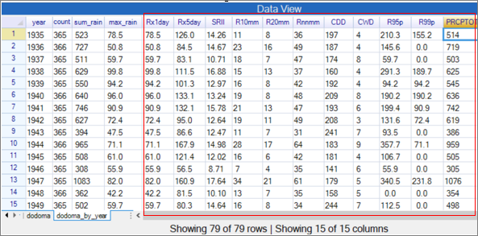 |
The indices are defined as shown in table 11.3a. In Fig. 11.3i the variable max_rain, from the Climatic > Prepare > Climatic Summaries is seen to be the same as Rx1day. We consider briefly how to get each of these indices using the other R-Instat dialogues.
| Table 11.3a Precipitation indices from climdex | ||
|---|---|---|
| Number | Name | Description |
| 17 | Rx1day | Annual maximum |
| 18 | Rx5day | Maximum from 5-day running totals |
| 19 | SRII | Simple intensity index, i.e. Annual total/Number of rain days |
| 20 | R10mm | Annual number of rain-days with 10mm or more |
| 21 | R20mm | Annual number of rain-days with 20mm or more |
| 22 | Rnnmm | Annual number of days with ≥ nn(mms). User chooses value of nn |
| 23 | CDD | Longest dry spell in the year (dry is <1mm) |
| 24 | CWD | Longest spell of successive rain days (rain is >=1mm) |
| 25 | R95p | Annual total greater than 95th percentile in base period |
| 26 | R99p | Ditto for 99th percentile |
| 27 | PRCPTOT | Total annual rainfall (from days with ≥ 1mm) |
This comparison is partly to help users understand exactly what each index is measuring. In addition the regular dialogues provide additional flexibility, if needed to examine the indices in more detail.
The second summary, produced earlier is the total annual rainfall, called sum_rain in Fig. 11.3i. This is almost the same as the climdex index 27, PRCPTOT. For example sum_rain = 523mm in 1935, compared to 514mm for PRCPTOT.
The small difference is because the sum_rain has totalled all the rain days, while PRCPTOT only considers those with at least 1mm.
Check this with Prepare > Column: Calculate > Calculation. With the Logical keyboard make a new column, called rain1, Fig. 11.3j, with:
rain1 <- ifelse(rain<1, 0, rain), or equivalently rain1 <- (rain>=1) * rain.
Then use Climatic > Prepare > Climatic Summaries with the new rain1 variable to check the annual totals now agree with those from climdex.
| Fig. 11.3j | Fig. 11.3k |
|---|---|
| 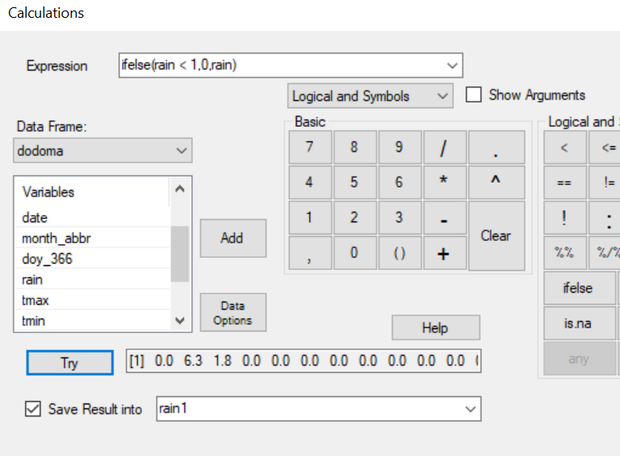 | 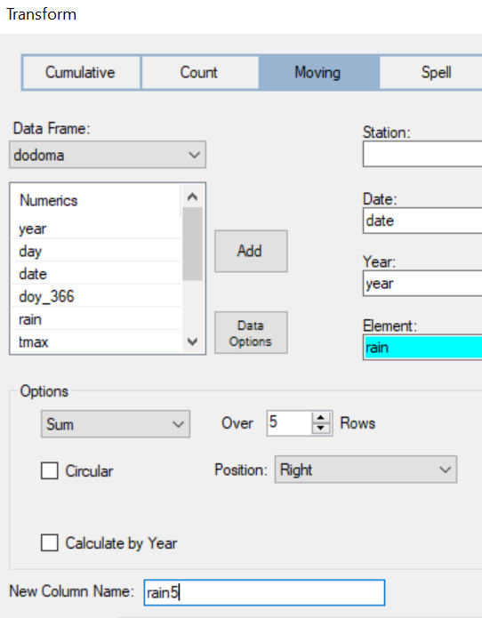 |
From the rain5 variable, the Climatic > Prepare > Extremes is an alternative dialogue to give the annual maxima, Fig. 11.3l. This gives the same results as the climdex Rx5day variable. It also gives a further the day in the year of the maximum. This could be used in a study to investigate whether there is any evidence for a trend in when the maximum occurs as well as its value.
| Fig. 11.3l | Fig. 11.3m |
|---|---|
| 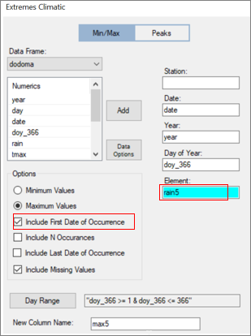 | 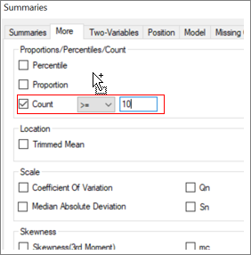 |
The “Simple intensity index”, SRII is essentially the mean rain per rain day, (just using the values of days with more than 1mm). In Fig. 11.3i it is just PRCPTOT/Rnnmm, because we chose 1mm as the threshold. For example, in 1935 there were 36 rain days with a total of 514mm. Hence
SRII1935 = 514/36 = 14.26mm
The next 2 indices, R10mm and R20mm are just the number days each year with 10mm, and 20mm or more, each year. They can also be given using the Climatic > Prepare > Climatic Summaries dialogue.
The indices CDD and CWD give the maximum dry-spell length and rain-spell lengths, where rain = 1mm. They are special cases of the Climatic > Prepare > Spells dialogue, Fig. 11.3n. The data in Fig. 11.3i show that the CDD index for the whole calendar year is probably of little interest, for this site, because the months of May to October are usually dry. Hence the longest dry-spell of 197 days, in 1935, is not a surprise. However, assessing evidence for trends in the longest dry-spell during the season, perhaps from 1 January to 31 March, may be useful.
| Fig. 11.3n Spells dialogue to give CWD index | Fig. 11.3o Filter sub-dialogue for rain days in baseline years |
|---|---|
| 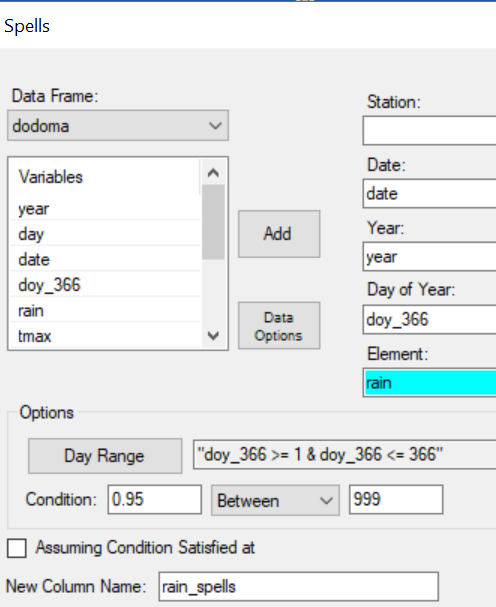 | 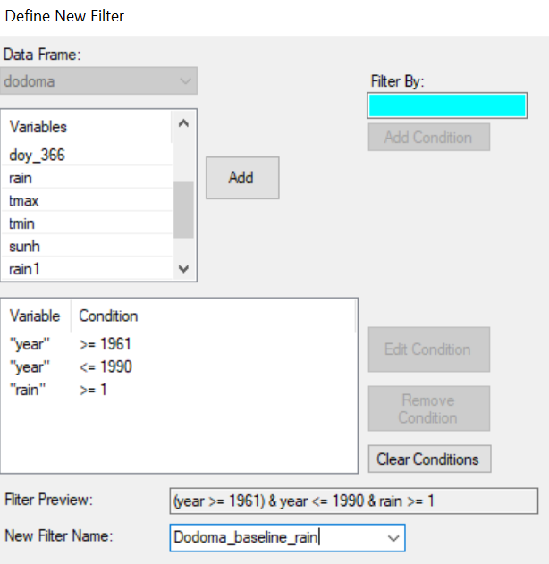 |
The final 2 precipitation indices are R95p and R99p. They are the total rainfall each year from heavy rain days. The definition of “heavy” is relative to the baseline years. The first step is therefore to find the thresholds. The process is as follows:
Filter the Dodoma data to the baseline years and just the rain days, Fig. 11.3.
Use the Prepare > Column: Calculate > Column Summaries, Fig. 11.3p, with the percentile summary, Fig. 11.3q, to give the 95% and 99% points of the rain variable. The 95% point, Fig. 11.3q, = 45.57mm and the 99% point = 67.3mm
| Fig. 11.3p Fig. 11.3q | |
|---|---|
| 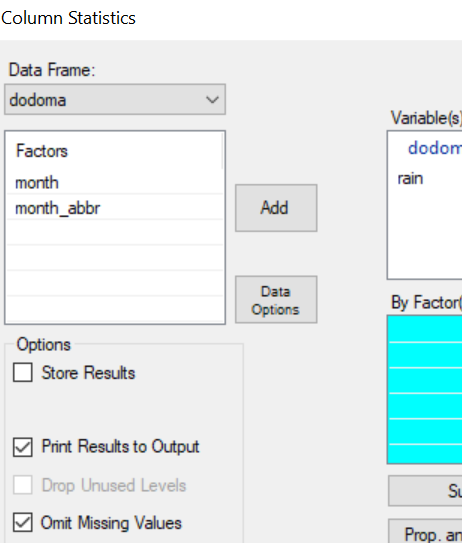 | 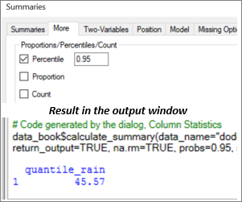 |
Now filter to use just the days for the whole record where (rain > 45.57), Fig. 11.3r. .
Use Climatic > Prepare > Climatic Summaries to give the sum and number of observations, Fig. 11.3s
| Fig. 11.3r | Fig. 11.3s |
|---|---|
| 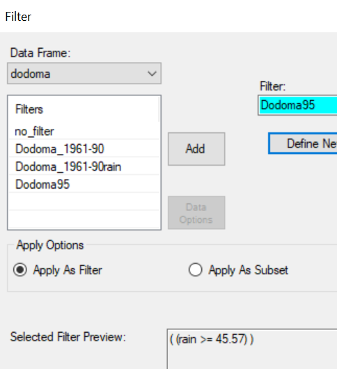 | 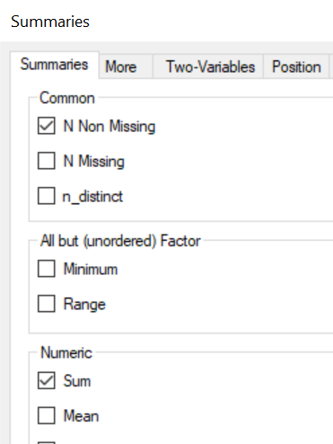 |
The resulting data are in Fig. 11.3t. The new sum_rain variable gives the same values as the R95p. In the first year, the total was 210.3mm from 3 rain days.
| Fig. 11.3t |
|---|
| 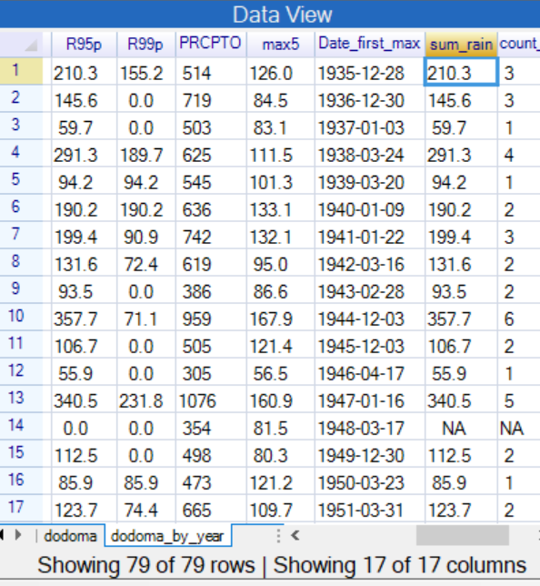 |
13.4 Climdex – Temperatures
The 16 temperature indices are shown in Table 11.4a.
| Table 11.4a Temperature indices from climdex | ||
|---|---|---|
| Number | Name | Description |
| 1 | FD | Number of frost days, when daily minimum temperature, Tn <0. |
| 2 | SU | Number of “Summer” days, when daily maximum temperature, Tx > 25 |
| 3 | ID | Number of icing days, when Tx < 0 |
| 4 | TR | Number of tropical nights, when Tn > 20 |
| 5 | GSL | Growing season length. Number of days between first span of 6 consecutive days with daily Tmean > 5°C and first span of 6 days (after July 1st) with Tmean < 5°C. (July to June in Southern hemisphere.) |
| 6 | TXx | Annual or monthly maximum of Tx |
| 7 | TNx | Annual or monthly maximum of Tn |
| 8 | TXn | Annual or monthly minimum of Tx |
| 9 | TNn | Annual or monthly minimum of Tn |
| 10 | TN10p | Percentage of days when Tn < 10th percentile from the baseline |
| 11 | TX10p | Ditto for Tx < 10th percentile |
| 12 | TN90p | Ditto for Tn > 90th percentile |
| 13 | TX90p | Ditto for Tx > 90th percentile |
| 14 | WSDI | Warm spell duration index, the annual number of day where at least 6 consecutive days are warmer than the 90th percentile |
| 15 | CSDI | Cold spell duration index, the annual number of days when at least 6 consecutive days are colder than the 10th percentile |
| 16 | DTR | Mean temperature range, i.e. mean difference between Tx and Tn |
They are again illustrated with the Dodoma data. Use Climatic > Prepare > Climdex, Fig. 11.4a and complete the Temperature sub-dialogue as shown in Fig. 11.4b.
| Fig. 11.4a The Climdex dialogue | Fig. 11.4b Climdex temperature sub-dialogue |
|---|---|
| 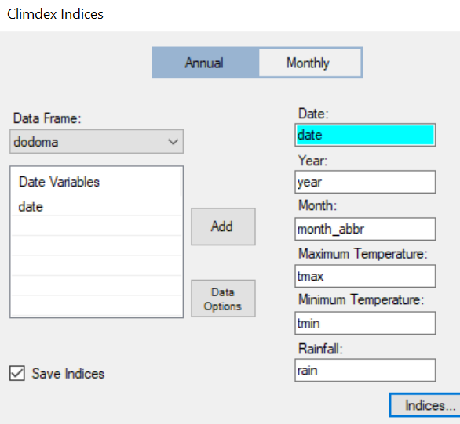 h | 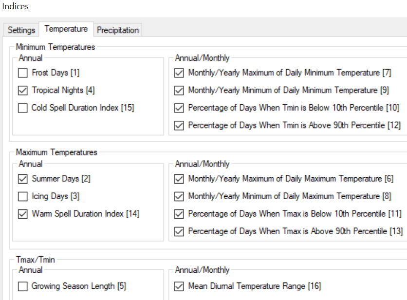 |
The results are in Fig. 11.4c. Some results are obvious; in particular in the later years, shown in Fig. 11.4c, there are about 30% of days per year in TN90p, i.e. with Tn higher than the 90% point from the 1961-90 baseline. And TN10p has very low values. The change in Tn is clearer than that of the maximum temperatures, Tx.
| Fig. 11.4c |
|---|
| 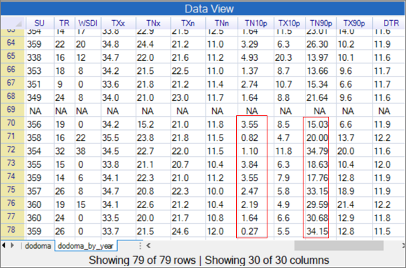 |
As in Section 11.3, some of the temperature indices can be calculated through the Climatic > Prepare > Climatic Summaries dialogue. For example completing Fig. 11.4d and Fig. 11.4e as shown produces the indices TNn and TNx.
| Fig. 11.4d | Fig. 11.4e Choosing the max and min |
|---|---|
| 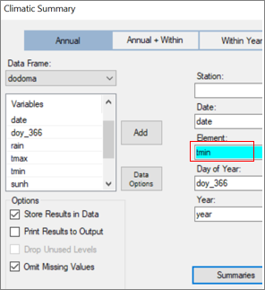 h | 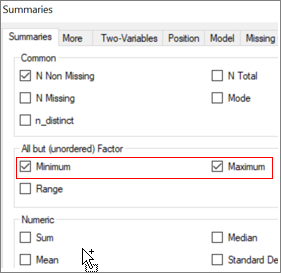 |
The calculations for 6 of the indices is more complex. They are numbered 10 to 15 in Table 11.4a and depend on the temperatures in the baseline period, usually 1961 to 1990. In this case the 10% and 90% points are found, in turn, for each day of the year[^48] and these values are then compared with the temperature on that day for the record.
13.5 Using the climdex indices
To be completed
13.6 Extreme value analysis
Using the extRemes package